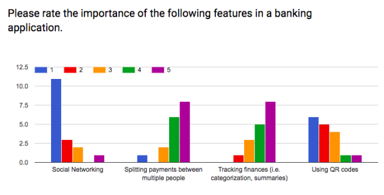
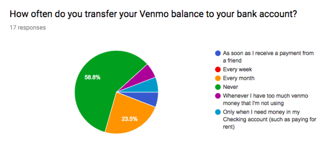
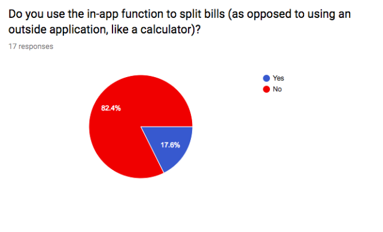
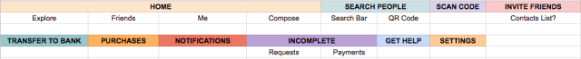
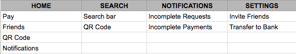

Venmo Concept
May - June 2018
May - June 2018
In Spring 2018, I challenged myself to a design project that would help me to fully explore each part of the UX design process. I considered various applications that exist on my mobile phone, but decided to tackle Venmo – a mobile payment service that makes transactions with friends seamless. I gave myself one month to complete the project.
As a college student, I have used Venmo on a weekly basis to pay or request money from friends. Venmo has been the tool that me and many friends use when we go out for food, and sometimes Venmo is even used to help split the cost of rent or housing-related bills. Although it serves its function as a mobile payment service well, I was wary of the social aspect of the application. Venmo boasts itself as an application with great integration of social and financial components, but are its users also placing high value on the social aspect of the app? What qualms did people have with the app? The application itself is also fairly basic; the visual design is neither outstanding nor terrible. With these questions in mind, I set out to redesign Venmo.
Before I jumped into the user research and visual redesign of the application, I wanted to understand the general business goals of Venmo and see if these goals were being met by the app. The three main business goals of the application involved the following:
It became apparent that one of the biggest goals of Venmo was to introduce a social component to banking. Taking this into consideration, I designed an online user survey on Google Forms to see if people actually considered this goal to be important to them.
I surveyed 17 college students between the ages 19-22, 52.9% of whom were female and 47.1% of whom were male. (In retrospect, I should have expanded my pool of survey participants.) The survey consisted of questions regarding the frequencies that they used the app, features in the application that were important to them, and situational questions.
  I discovered that outside of using the application to pay or request money from someone, people generally did not use the application. The situations that most people would use the application included splitting the food bill, paying housing-related items, and other miscellaneous transactions. One surprising find was that many of the survey participants did not frequently transfer the money they receive from Venmo payments back to their bank account. This raised a lot of questions about whether Venmo’s main goal of being a social platform was one that was actually important to its users.
In the data I collected from the survey, I noticed a few common threads:
Taking these survey results into consideration, I decided to focus on the following aspects on my redesign of the application:
Following the research, I analyzed the existing architecture of information in Venmo. What I found was a cluttered wealth of pages and a handful of less important pages that would be better when combined with others.
Laying out the different pages in Venmo helped me to visualize a better information architecture for the application. I decided to nest all the pages under four main ones: Home, Search, Notifications, and Settings. Doing so would allow less confusion for users and would reduce the amount of steps users would need to take in order to perform basic tasks.
I began with sketching the layouts of each page, coming up with different variations to highlight the payment feature and new finance expense tracking feature. I also experimented with the layout of navigation pages, making some pages more accessible to users who frequently use the application for those basic functions. By making these pages constantly visible on the bottom navigation bar instead of nested in a hamburger menu on the side, users would be reminded of important notifications or other features that may influence their decision to continue using the application, such as a more refined search page or less-cluttered settings page.
Initially, I thought about designing a landing page that automatically prompted users to pay or request money, but I reconsidered it, as some users would want to perform other functions quickly in the app. Instead, I kept the social feed but removed the global feed, and added a “groups” section that allowed users to quickly manage frequently paid groups. I also added a spreadsheet icon in the upper right corner that would take users to the expenses page. The expenses page would allow users to see track and organize their finances by date and category.
The users that I surveyed were unaware of the QR code feature, which is a convenient way to send or request money from people whom they have never interacted with before. By making the QR scanner the highlight of the search page, users would be able to pay others more quickly.
This new add button would allow users to quickly add several functions: transactions, categories, groups, or expenses. Tapping on “transactions” would lead users to a page similar to the existing payment page on Venmo, but would include a categories tab that users could use to categorize the payment. Similarly, the “category,” “group,” and “expense” buttons would lead users to pages that allow them to add a new category, group, or expense, respectively.
The “activity” page would serve as a notifications page, where users could keep track of their recently completed transactions or view incomplete transactions requested by or from friends. Having a page for the user’s recent activity would allow users to keep track of their recent expenses and quickly view their transactions on a single page.

Many of the existing standalone pages on the Venmo application can be nested under a single settings page. The main settings page includes a nested settings button, which would lead users to a separate page with privacy and notification settings.
Given the short window of time I gave myself to complete this project, I recognized the importance of spending a majority of time on research to better understand the goals of both the product and the users. Because of this limited time frame, I was unable to spend much time in the design process, and subsequently, was unable to fully flesh out ideas that I had hoped to pursue when restructuring the information architecture of the application. I was also unable to user test and reiterate upon the wireframes.